Why Model a Time Series?
Some things can be forecast and some cannot, and the difference is not the amount of data you have. Two series make the point better than any definition could.
using TSAnalytics, Plots
d = dataset("vic_elec")
plot(d.Demand[1:672]; title="Victorian electricity demand, a fortnight",
xlabel="half-hour index", ylabel="MW", legend=false)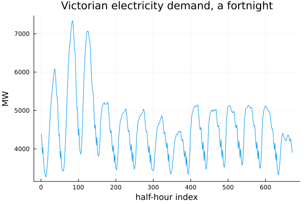
This is 672 half-hourly readings — 1 to 14 January 2012, fourteen days, taken directly from the first fortnight of a series that runs to 52,608 observations in total. Demand ranges from about 3,270 MW overnight to 7,345 MW at a peak.
What is obvious is the daily rhythm: a trough before dawn, a rise through the morning, a peak in the evening, fourteen times over. What takes a second look is that the weekends are not simply lower — their whole shape is different, with a later and shallower morning ramp, because nobody is commuting. Look longer still, past this fortnight, and a slower rhythm sits underneath the daily one: demand in January is not demand in July. This series has at least three seasonal periods running at once, at three different timescales, and that is the entire subject of Chapter 16.
None of that is a problem for forecasting. It is the reason this series is forecastable. Tomorrow at 6 p.m. will look like every other weekday at 6 p.m., adjusted for temperature, and a model that knows the calendar will be right more often than it is wrong.
gafa = dataset("gafa_stock")
aapl_idx = findall(==("AAPL"), gafa.Symbol)
close = gafa.Close[aapl_idx]
plot(close; title="Apple daily closing price, 2014-2018",
xlabel="trading day", ylabel="USD", legend=false)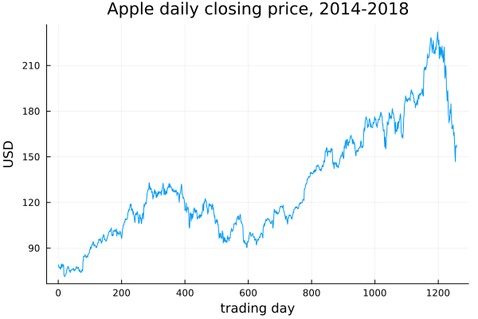
Twelve hundred and fifty-eight trading days, January 2014 to December 2018, starting near $79 and ending well above $150. It trends, it wanders, and to an eye trained on the electricity chart it looks like it must have structure too. It has almost none that helps you. The best forecast of tomorrow's closing price is very close to today's closing price, full stop, and this chapter would rather say that plainly than hedge it. What makes Apple's share price different from Victoria's electricity demand is not that one is noisier than the other — plenty of noise sits on top of the daily demand cycle too. It is that the mechanism generating the price already incorporates every piece of public information faster than anyone reading this book could act on it, which is precisely what makes the next move close to unpredictable even though the history is a smooth, structured-looking line.
vic_acf = acf(d.Demand[1:672], 1:100)
aapl_acf = acf(close, 1:60)
p1 = plot(vic_acf; title="ACF: electricity demand (a fortnight)")
p2 = plot(aapl_acf; title="ACF: Apple closing price")
plot(p1, p2; layout=(1,2), size=(800,300))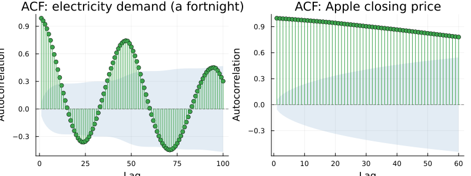
Nothing about the autocorrelation function has been explained yet — Chapter 5 does that properly — so take these two pictures only as pictures. The electricity demand's autocorrelation swings: strongly positive at short lags, negative around half a day away, strongly positive again a full day away, and it keeps doing this for as long as you keep looking. The share price's autocorrelation does none of that. It simply stays close to 1 and creeps down, slowly, with no rhythm in it anywhere. Two series, two shapes that share almost nothing, and by the end of Part I you will know exactly why.
Electricity demand in Maharashtra is forecastable for the same reason Victorian demand is — a strong daily and weekly rhythm, driven by when people are awake, working, and running appliances — with one complication Australian data does not have. Diwali falls in October some years and November in others, and industrial and retail demand move with it. A model that assumes October is always October will be wrong in a way that more data cannot fix, only disguise. Chapter 36 returns to this properly.
The obvious attempt, and why it fails
Here is a series with no trend and no seasonality — the two things every method so far has been implicitly guarding against.
using Random
Random.seed!(1)
n = 100
phi = 0.9
y = Vector{Float64}(undef, n)
y[1] = randn() / sqrt(1 - phi^2)
for t in 2:n
y[t] = phi * y[t-1] + randn()
end
plot(y; title="A simulated series, φ = 0.9", xlabel="t", legend=false)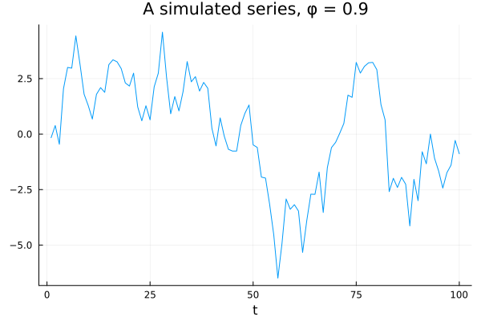
There is no trend here, no seasonality, nothing that looks obviously wrong. Handed this without being told how it was built, most people would compute a mean, attach a standard error, and move on. So do exactly that.
using Statistics
m = mean(y)
se = std(y) / sqrt(n)
println("mean = ", round(m, digits=4), ", se = ", round(se, digits=4))
println("95% interval: [", round(m - 1.96se, digits=3), ", ", round(m + 1.96se, digits=3), "]")mean = 0.1425, se = 0.2421
95% interval: [-0.332, 0.617]A perfectly ordinary-looking answer: a mean near zero, a small standard error, a tight interval. Nothing about the number itself signals trouble. Now check it, the only way it can honestly be checked — not by inspecting the formula harder, but by finding out what the formula actually does across many series built the same way.
Random.seed!(1)
nsim = 5000
means = Vector{Float64}(undef, nsim)
naive_ses = Vector{Float64}(undef, nsim)
for i in 1:nsim
yi = Vector{Float64}(undef, n)
yi[1] = randn() / sqrt(1 - phi^2)
for t in 2:n
yi[t] = phi * yi[t-1] + randn()
end
means[i] = mean(yi)
naive_ses[i] = std(yi) / sqrt(n)
end
histogram(means; bins=60, title="5,000 sample means, AR(1) φ=0.9, n=100",
xlabel="sample mean", legend=false)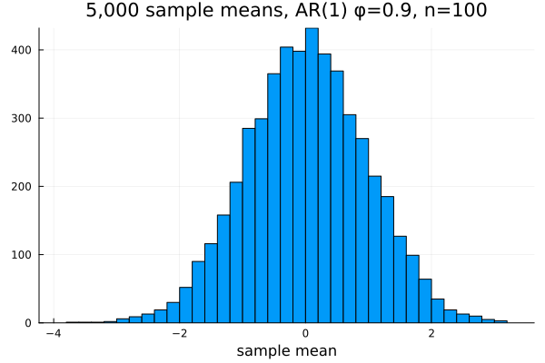
Five thousand independent draws of a series exactly like the one above, each length 100, each reduced to its own sample mean. This is the histogram of five thousand answers a working analyst would have gotten, one per series, all following the identical recipe used a moment ago.
empirical_sd = std(means)
avg_naive_se = mean(naive_ses)
println("empirical sd of the means: ", round(empirical_sd, digits=4))
println("average textbook se: ", round(avg_naive_se, digits=4))
println("ratio: ", round(empirical_sd / avg_naive_se, digits=3))empirical sd of the means: 0.9552
average textbook se: 0.2056
ratio: 4.647The true spread of these five thousand means is 4.65 times what the textbook formula, applied faithfully to each series in turn, claimed it would be. Not a rounding error, not a fluke of one bad draw — the whole histogram, four and two-thirds times wider than the formula said to expect. The formula did not fail loudly. It returned a plausible number with the right units every single time, and nothing anywhere flagged a problem.
The reason has a name. For an AR(1) process the variance of the sample mean is inflated relative to the independent-data formula by a factor of (1+φ)/(1−φ) — nineteen at φ = 0.9 — and the standard deviation by the square root of that, √19 ≈ 4.36. The simulation above lands at 4.65, close to that theoretical value and well inside what five thousand draws of a stochastic experiment should produce; run it again with a different seed and expect a number somewhere in the same neighbourhood, not this exact one. Each observation in a persistent series carries only a fraction of an independent observation's worth of information, and a formula built for independent data has no way to know that.
This is the characteristic failure this whole book exists to prevent. Not an error message, not a warning triangle — a confident, plausible, wrong answer, arrived at by applying a method that was never wrong about its own arithmetic, only about whether it applied. Every technique in Part I is, from one angle or another, a way of not making this mistake again.
What is actually going on
r = acf(y, 1:10)
plot(r; title="ACF of the AR(1) series above")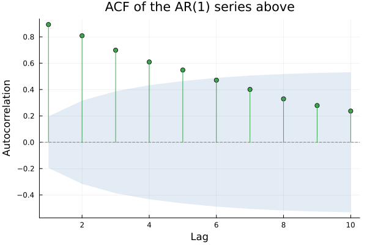
The correlation at lag 1 is about 0.89, at lag 2 about 0.81, and it keeps decaying geometrically from there. Each observation carries most of the information the previous one did, which is exactly why a hundred of them were worth so much less than a hundred independent draws in the simulation above. The useful part of this finding is that the dependence is measurable. It is not a nuisance to be assumed away by hoping the sample is large enough; it is a property of the series that can be estimated directly, and Chapter 5 is where that estimation becomes precise.
Three more words belong in this chapter before the gallery, because every series in it will need them eventually: trend, the slow long-run movement in the level; seasonality, movement that repeats at a fixed, known period; and remainder, whatever is left once both are accounted for. Chapter 13 takes these apart properly. For now it is enough to be able to point at a picture and say which parts are which.
The gallery
Five series, none of them contrived, each showing something the last one did not.
jj = dataset("jj")
plot(jj.date, jj.value; title="Johnson & Johnson quarterly earnings",
xlabel="year", ylabel="USD per share", legend=false)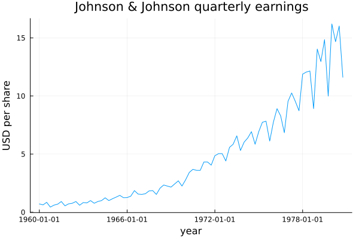
Eighty-four quarterly observations, 1960 to 1980. This is Shumway and Stoffer's own opening figure, and it is worth saying plainly that it is the best single teaching series in the field — plenty of others show a trend, plenty show seasonality, very few show what happens when the two interact. What is obvious is the upward trend and the four-quarter wobble riding on top of it. What takes longer to see is that the wobble itself is growing. In the early 1960s the swing between a series' best and worst quarter is a few cents; by the late 1970s it is close to a dollar. The seasonal effect is not a fixed amount added every year — it is a fixed proportion of a level that keeps rising, which forces a choice the book has not made yet: a multiplicative decomposition in Chapter 14, or a transformation that turns multiplication back into addition, in Chapter 7. Meet the problem here, before either answer.
plot(jj.date, log.(jj.value); title="The same series, log scale",
xlabel="year", ylabel="log(USD per share)", legend=false)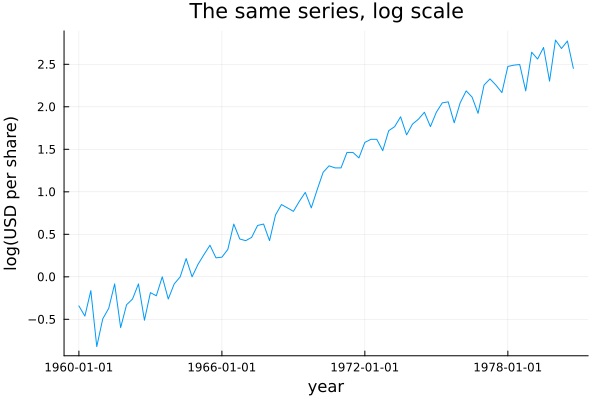
Same eighty-four points, one transformation. The growth is now close to linear and the seasonal swings are close to constant width throughout. One operation turned a hard problem into an easy one, and it cost nothing but a function call. That is the strongest possible argument for Chapter 7 that this book can make, and it costs one extra chart to show it here rather than assert it later.
land = dataset("gtemp_land")
ocean = dataset("gtemp_ocean")
plot(land.date, land.value; label="land", xlabel="year", ylabel="anomaly (°C)",
title="Global temperature anomaly, land vs. ocean")
plot!(ocean.date, ocean.value; label="ocean")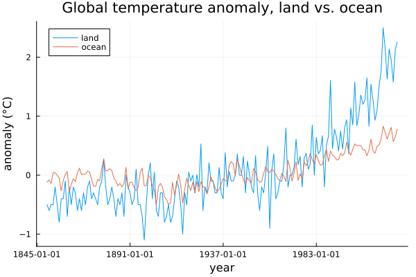
A hundred and seventy-four years of both series, 1850 onward. Both rise, which is the obvious part. Less obvious: they are far from parallel — land warms visibly faster than ocean, a genuine physical fact about heat capacity rather than an artefact of measurement, and the gap between the two lines widens steadily rather than staying fixed. There is also no seasonality anywhere in either series, which is what makes this pair a useful contrast with jj: trend without season is a different modelling problem from trend with season, not a simpler version of the same one. The year-to-year jitter is real climate variability, not measurement noise, and a model that tried to smooth it away entirely would be throwing out information along with the wiggle.
soi = dataset("soi")
rec = dataset("rec")
p1 = plot(soi.date, soi.value; title="Southern Oscillation Index", legend=false)
p2 = plot(rec.date, rec.value; title="Fish recruitment", legend=false)
plot(p1, p2; layout=(2,1), size=(700,500))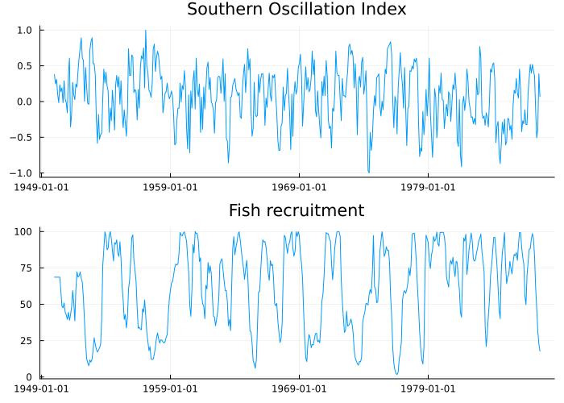
Four hundred and fifty-three monthly observations in each, the most reused pair in the whole Shumway and Stoffer book. Both series oscillate — that is what anyone sees first. What takes real looking is that fish recruitment does not simply oscillate alongside the Southern Oscillation Index; it follows it, several months behind, a rise in one foreshadowing a rise in the other. Neither series explains itself. Each explains the other, displaced in time. Every method up to this point in the chapter has looked at one series in isolation, and this picture is the argument for the ones that will not — cross-correlation, and eventually the whole of Part VII, exist because of pairs like this one.
eq = dataset("EQ5")
ex = dataset("EXP6")
p1 = plot(eq.value; title="Seismic trace: earthquake", legend=false)
p2 = plot(ex.value; title="Seismic trace: mining explosion", legend=false)
plot(p1, p2; layout=(2,1), size=(700,500))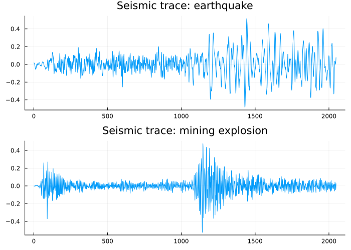
Two thousand and forty-eight points each, recorded at a seismic station. Slow down on this one. The question these two traces ask is not what happens next — nobody is trying to forecast the next sample of ground motion. The question is which of these two things is this, and it is a classification problem sitting inside a field most people associate entirely with forecasting. Getting it right is how test-ban treaties are actually monitored: distinguishing an underground nuclear test from an earthquake, from a seismic trace alone, has real geopolitical weight. What separates the two traces is not their overall level or duration but the balance of energy between their early and late phases — a question about frequency content rather than level, and that is the door Chapter 6 opens.
A cautionary tale
using DelimitedFiles
corrupted = [112,118,132,129,121,135,148,148,136,119,104,118,
118,132,129,121,135,148,148,136,119,104,118,115,
115,126,141,135,125,149,170,170,158,133,114,140,
145,150,178,163,172,178,199,199,184,162,146,166,
171,180,193,181,183,218,230,242,209,191,172,194,
196,196,236,235,229,243,264,272,237,211,180,201,
204,188,235,227,234,264,302,293,259,229,203,229,
242,233,267,269,270,315,364,347,312,274,237,278,
284,277,317,313,318,374,413,405,355,306,271,306,
315,301,356,348,355,422,465,467,404,347,305,336,
340,318,362,348,363,435,491,505,404,359,310,337,
360,342,406,396,420,472,548,559,463,407,362,405]
correct = Float64.(readdlm(TSAnalytics.AIR_PASSENGERS, ','; skipstart=1)[:, 2])
plot(correct; label="correct", title="The airline series: correct vs. the copy this project carried")
plot!(corrupted; label="corrupted", linestyle=:dash)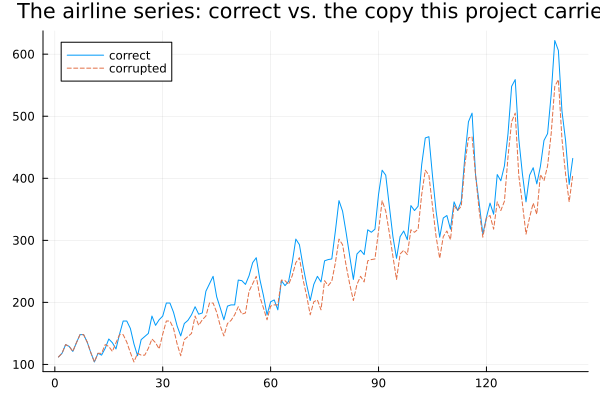
The airline passengers series is the most reproduced dataset in this field — Box and Jenkins, dozens of later textbooks, the documentation of most forecasting packages built since. A corrupted copy of it circulated inside this project for a period, and the two lines above sit almost exactly on top of each other, which is precisely the problem.
I found this by accident, comparing an old verification file against a freshly regenerated one, and it took a moment to believe what the numbers were saying. The corrupted copy's second row was not 1950 at all — it was 1949's own twelve values shifted left by one position, with a single new number tacked on the end to keep the row length right. Every real year from 1950 onward was still there, just each one sitting a full row later than it belonged. The last real year, 1960, had nowhere left to go and was simply not present. A hundred and thirty of the hundred and forty-four values were wrong, and not one of them looked wrong on its own.
It survived analysis unnoticed for a reason this chart makes obvious: a shifted, truncated monthly series with a trend and a seasonal pattern still looks exactly like a monthly series with a trend and a seasonal pattern. Nothing in a plot of it says this is corrupted. Every result that had been computed from the bad copy had to be regenerated once this came to light.
State the operating principle plainly, because the next forty chapters lean on it: check against a primary source, and do not trust a number because it arrived from somewhere reputable. A file that has sat inside a project for a while, unquestioned, is not the same thing as a file that has been checked.
Where this leaves you
You have now met series you cannot handle with the tools in front of you — a persistent process that makes a textbook standard error lie to you by a factor of four and a half, a growing seasonal swing that additive methods cannot see correctly, a pair of series that only make sense read together, a question about frequency rather than level, and a reminder that even a famous, widely reproduced dataset can be wrong in your own copy of it. Part I builds the tools these situations need, starting with a question that sounds almost too simple to bother asking: what a time series actually is, as far as a computer sitting between you and the data is concerned.